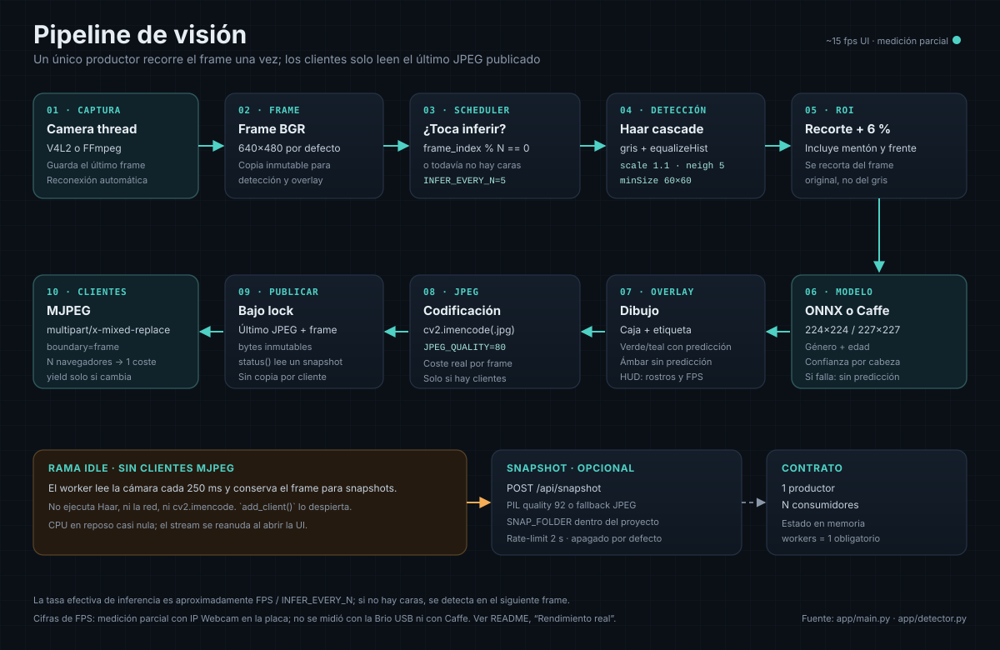
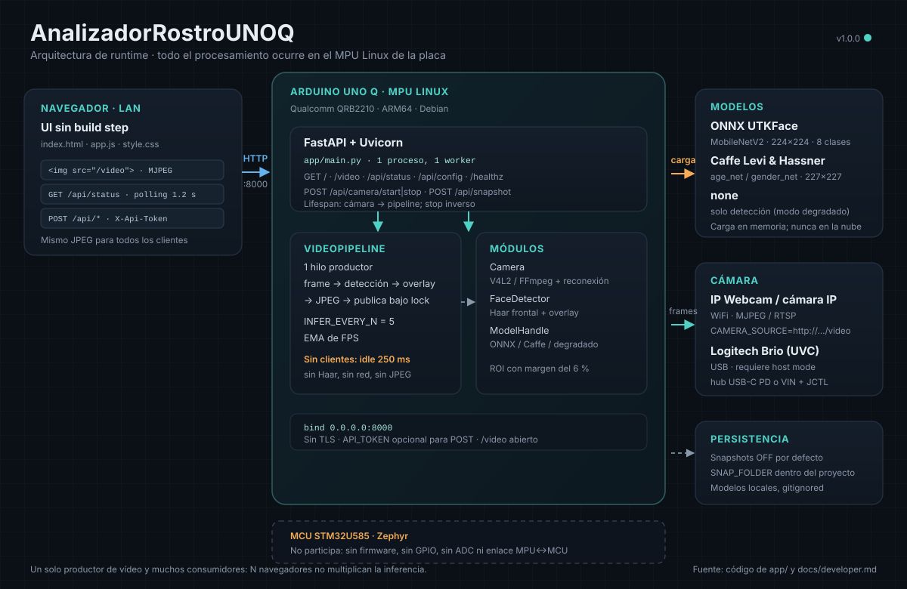
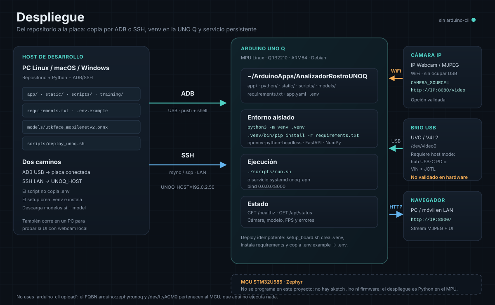
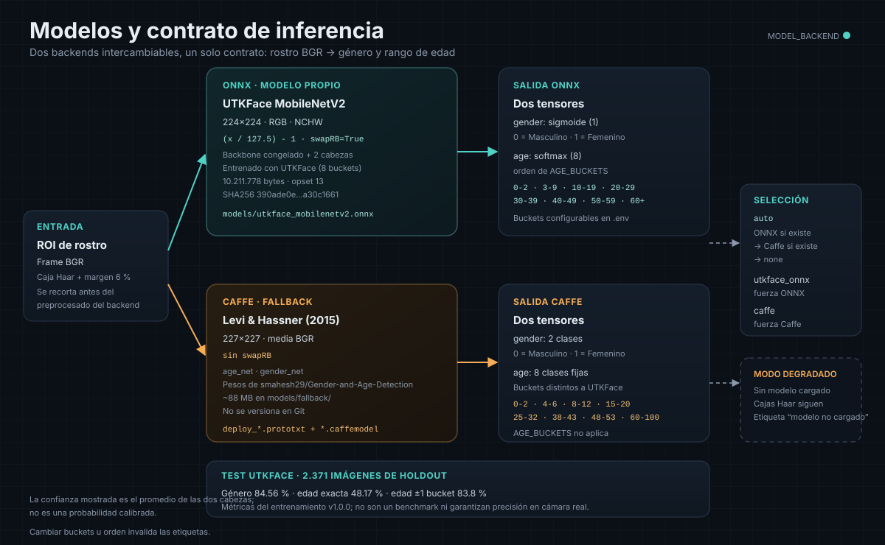

Rostros, edad y género.
Todo en la placa.
La primera versión del analizador: YuNet, tracker IoU y clasificación ONNX sobre Arduino UNO Q, con stream MJPEG y una UI en español.

Qué es y por qué existe
El problema, el enfoque y el alcance real del proyecto.
App Python/FastAPI en el MPU Linux (QRB2210, ARM64, Debian) de la UNO Q. Captura video de cámara IP/MJPEG o USB UVC, detecta rostros frontales con Haar y estima género binario y edad en ocho buckets con un ONNX propio entrenado con UTKFace o el Caffe de Levi & Hassner. Sirve el video anotado como MJPEG en el puerto 8000, con UI en español y snapshots off. Apunta a demostraciones y docencia: visión clásica en ARM64 sin GPU ni nube.
Demuestra que el MPU sostiene la app con un productor de video y varios navegadores consumiendo el mismo JPEG, sin multiplicar la inferencia. No identifica personas, no mide edad exacta y no ejecuta nada en el MCU STM32U585; tampoco tiene tracking, anti-spoofing ni grabación. Las métricas (género 84,56 %, edad exacta 48,17 %, ±1 bucket 83,8 %) son de UTKFace, no de cámara real; solo se validó IP Webcam a ~15 fps y la Brio USB quedó sin probar.
Los tropiezos salen de la bitácora y de las versiones tempranas. La evaluación usa seis criterios fijos, de 1 a 5, y no premia la espectacularidad: premia que el proyecto se pueda reproducir y entender.
Visión artificial sin GPU y sin nube
La v1 lleva detección y clasificación al QRB2210 y sirve el resultado como MJPEG dentro de la LAN. Es la base sobre la que se construyó la v2.
La visión que se va de la red
Enviar cada frame a un servicio externo plantea privacidad, costo y latencia. Para un local, un evento o un prototipo, esa dependencia es difícil de justificar.
Inferencia edge, video local
YuNet + tracker IoU + clasificador ONNX en la placa. El video se queda en la LAN y se sirve como stream MJPEG a cualquier navegador.
Cómo funciona, paso a paso
Detección y clasificación separadas para gastar CPU solo cuando hace falta.
Captura
Cámara IP MJPEG por WiFi o Brio USB, con resolución reducida para el pipeline.
Detección
YuNet a 320 px cada N frames, con fallback Haar si falta el modelo.
Tracker IoU
Conserva la última predicción y evita el parpadeo de etiquetas entre frames.
Clasificación
ONNX UTKFace o Caffe Levi & Hassner, en ciclos separados de la detección.
Anotación y stream
Cajas, etiquetas y HUD sobre MJPEG para cualquier navegador de la red.
Un pipeline con dos cadencias
Detectar es caro; clasificar también. Separar los ciclos y reutilizar tracks es lo que permite mantener la UI fluida en CPU.
YuNet primero
Detección frontal rápida y liviana, con Haar como red de seguridad.
Tracker con memoria
Un track desaparecido se conserva hasta dos frames para no perder la etiqueta.
Modo reposo
Sin clientes MJPEG no hay inferencia ni JPEG: la CPU queda casi libre.
Decisiones de ingeniería
La versión que abrió el camino: dataset, entrenamiento, runtime, UI y despliegue.
YuNet + Haar
Detección frontal con score 0.6 y NMS 0.3, y fallback clásico si falta el modelo.
Tracker IoU
Empareja detecciones con tracks y conserva predicciones para estabilizar la UI.
Dos backends
ONNX propio entrenado con UTKFace o Caffe de Levi & Hassner; `auto` prefiere el ONNX.
Entrenamiento incluido
Pipeline UTKFace con métricas de test: género 84,56 %, edad exacta 48,17 %, ±1 bucket 83,8 %.
MJPEG multi-cliente
Stream para varios navegadores y snapshots, sin plugins en el cliente.
Privacidad por diseño
Sin envío de frames a Internet; advertencias sobre datos biométricos y consentimiento.
El sistema, en dibujos
Los diagramas se mantienen en el repositorio y se actualizan con el código.



Con qué está construido
OpenCV, ONNX Runtime y FastAPI sobre el Linux de la UNO Q; PyTorch solo para entrenar.
$ git clone https://github.com/wanderc137/AnalizadorRostroUNOQ $ cd AnalizadorRostroUNOQ $ python3 -m venv .venv && source .venv/bin/activate $ pip install -r requirements.txt $ ./scripts/download_model.sh $ python -m app.main # UI → http://<IP_UNO_Q>:8000/
Todo está escrito
Cada decisión, cada límite y cada comando están documentados en el repositorio. Sin folletos: lo que funciona se muestra, lo que no, también.
Datasheet
Instalación, operación, configuración, API y privacidad.
Abrir documento CódigoGuía de desarrollador
Módulos, hilos, frontend, entrenamiento y extensión.
Abrir documento HistoriaBitácora
Decisiones, pruebas y evolución de la v1.
Abrir documento FuentesReferencias
YuNet, UTKFace, ONNX, FastAPI y MJPEG.
Abrir documentoLos tropiezos, documentados
Lo que no funcionó en las primeras versiones, con la corrección aplicada.
ONNX ausente al inicio
El backend utkface_onnx requería un modelo excluido de Git y la app arrancaba sin él. Se entrenó MobileNetV2 con UTKFace, se publicó el asset v1.0.0 con SHA256 y se mantuvo la cadena ONNX → Caffe → modo degradado para que la detección siguiera funcionando.
Buckets de edad mezclados entre backends
Reutilizar AGE_BUCKETS para Caffe habría reetiquetado 25-32 como 30-39 sin fallar. Se separó CAFFE_AGE_BUCKETS como constante propia y se documentó que los buckets son parte del contrato del modelo, no configuración global.
Workers de video que morían o revivían
Una excepción no capturada mataba el hilo, un start/stop rápido reutilizaba el Event de parada y un hilo viejo podía liberar el VideoCapture nuevo. Se encapsuló cada iteración en try/except, se crean Events por ejecución y solo stop() libera la cámara.
Snapshots sin autenticación ni confinamiento
Cualquiera en la LAN podía guardar JPG de rostros y SNAP_FOLDER=../../.. escribía fuera del proyecto. Se agregaron token opcional, rate-limit atómico de 2 s, carpeta deshabilitada por defecto y revalidación de ruta en cada captura.
Cómo se mide este proyecto
Seis criterios fijos, con la evidencia que respalda cada nota.
Lo que suelen preguntar
¿Qué hace exactamente?
Detecta rostros frontales y muestra una etiqueta de género binario y rango de edad sobre un stream MJPEG servido desde la placa. La UI informa rostros, FPS, backend y estado de cámara en el puerto 8000.
¿Reconoce personas o mide la edad exacta?
No. No calcula embeddings de identidad ni compara contra una base de datos, y la edad es un bucket de ocho clases, no una medición exacta. El propio README advierte que no sirve para control de acceso ni decisiones automatizadas.
¿Cómo se instala y se ejecuta?
Se crea un venv, se instala requirements.txt, se copia .env.example a .env y se descargan los modelos con los scripts. En la placa se ejecuta con python -m app.main o se despliega con scripts/deploy_unoq.sh y el servicio systemd unoq-app.
¿Qué se puede reutilizar?
El hilo de cámara con reconexión, el patrón de un productor MJPEG y muchos lectores, el cargador de modelos con fallback y la validación de configuración. También el parser de nombres UTKFace y su self-test para otros entrenamientos.
¿Te animás?
Usá esto como base y referencia para entender la primera versión del analizador y usarla como base para visión en el borde. Este proyecto es la prueba de que se puede hacer con componentes reales.